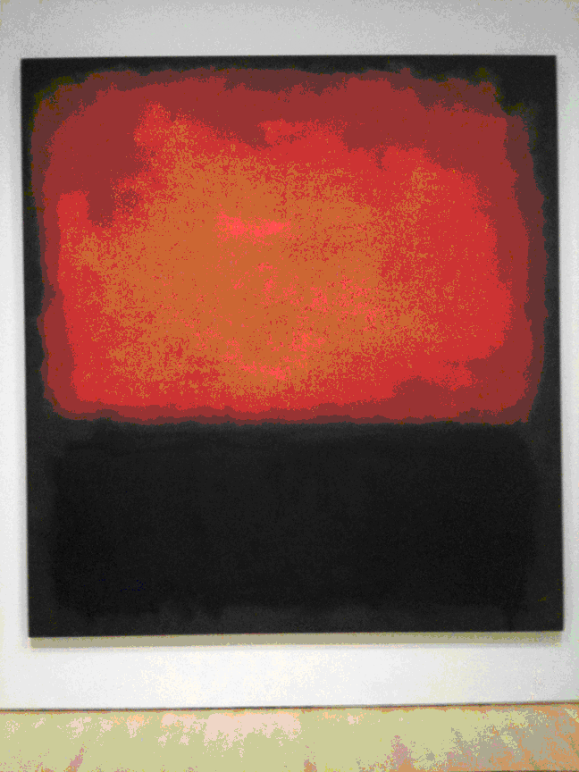
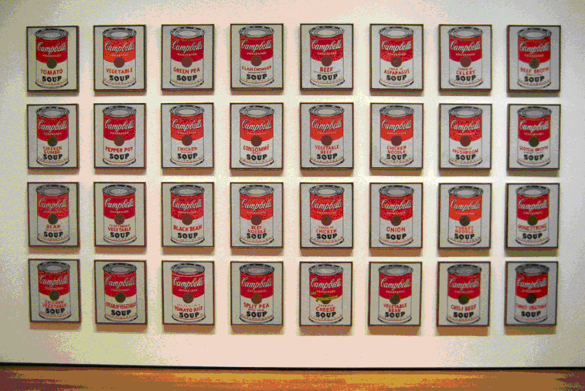
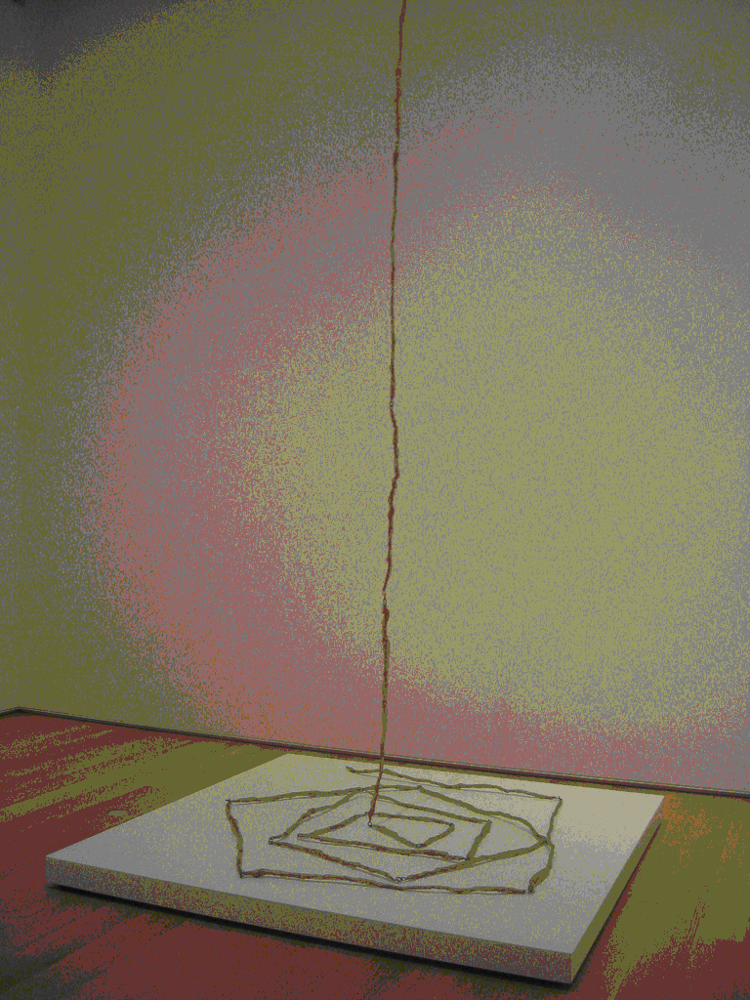

1
Édouard Manet’s painting A Bar at
the Folies-Bergere (1881-82) is
considered a masterpiece because:
Choose one answer.
| a. Its unique combination of still-life, artifice and skewed perspective | ||
| b. It helped incite moral and political unrest in his native France | ||
| c. Its lewd depiction of the female form | ||
| d. Its use of broad brushstrokes, rendering the work nearly abstract in appearance |
Question 2
Identify the significant event in
Claude Monet’s early career that
forever changed how he approached
painting.
Choose one answer.
| a. Monet was drafted into military service to fight in the Franco-Prussian War | ||
| b. Monet moved to an estate in Giverny in the French countryside | ||
| c. The French Academy rejected two of his paintings, claiming they looked “incomplete” | ||
| d. Friend Eugene Bodin encouraged Monet to begin painting outdoors and experiment with plein air painting |
Question 3
In his time, Gustave Courbet’s use
and portrayal of female nudes in
his paintings was widely considered
to be:
Choose one answer.
| a. Vulgar | ||
| b. Religious | ||
| c. Classical | ||
| d. Urban |
Question 4
Monet’s Water Lilies series of
paintings, created towards the end
of his life, are a strong example
of:
Choose one answer.
| a. The artist’s use of a portable easel while working outdoors | ||
| b. An increasingly abstract perspective due to the artist suffering from cataracts | ||
| c. A full and varied color palette that bore visual signs of Fauvism and Expressionism | ||
| d. All of the above |
Question 5
Realism is an approach to art that
stresses:
Choose one answer.
| a. The absurd and comical nature of life | ||
| b. Mythological and idealized subject matter, often religious in nature | ||
| c. The artist’s personal expression of his/her unconscious | ||
| d. The naturalistic representation of objects and figures |
Question 6
The landmark painting Impression,
Sunrise (1872) was made by which
Impressionist artist?
Choose one answer.
| a. Edgar Degas | ||
| b. Paul Cézanne | ||
| c. Claude Monet | ||
| d. Pablo Picasso |
Question 7
The originators of Impressionism
organized themselves and their art
in response to what?
Choose one answer.
| a. The French public’s stated preference for art that appeared unrealistic | ||
| b. Being shunned by academic art institutions, the French Salon and other government sanctioned art exhibitions | ||
| c. Art critic Louis Leroy’s scathing review of a Claude Monet solo exhibition | ||
| d. Bourgeois lifestyles that dominated Paris at the time |
Question 8
Which sentence best describes why
the painting of Édouard Manet is
considered modern?
Choose one answer.
| a. Manet was an outspoken proponent of new technologies and believed art should represent these latest advancements | ||
| b. Manet called for the annihilation of the French Salon | ||
| c. Manet depicted snapshots of city and rural life while maintaining traditional motifs found in Realist works of art | ||
| d. Manet had a romantic affair with his piano teacher, Suzanne Leenhoof, with whom he had a child |
Question 9
Which term best describes an
Impressionist work of art?
Choose one answer.
| a. A painting composed using loosened brushstrokes, and does not necessarily rely on realistic depictions of objects and figures | ||
| b. Swirling, swaying and exaggerated brushwork, all used to express the artist’s emotional state | ||
| c. Lacks the appearance of the artist’s touch, and is often made using industrial “non-art” materials | ||
| d. Stresses the artist’s interest in mythological and primitive subject matter |
Question 10
Which term best describes the type
of training artists received at The
French Academy?
Choose one answer.
| a. A concentration on working outdoors, also known as plein air painting | ||
| b. A concentration on drawing from antique statuary and live models | ||
| c. A multi-disciplinary approach that favored training in all variety of artistic media | ||
| d. A focus on improvisational “action” painting |
Question 11
Despite the classical approach to
sculpture adopted by Auguste Rodin,
which example best explains why the
artist’s work is distinctly modern?
Choose one answer.
| a. In The Thinker (1880), Rodin depicts the subject as the ideal, strong in both mind and body, but evidently lonely and without purpose | ||
| b. In The Kiss (1884), the depictions of intertwined human figures was considered at the time a lewd display of physical affection | ||
| c. His use of nudity in much of his sculpture, as with The Age of Bronze (1876) was seen as a radical departure from accepted sculptural norms | ||
| d. Both B and C |
Question 12
Georges Seurat’s painting Sunday
Afternoon on the Island of La Grand
Jatte (1884-86) is arguably the
best known example of what painting
style?
Choose one answer.
| a. Pointillism | ||
| b. Surrealism | ||
| c. Abstract Expressionism | ||
| d. Impressionism |
Question 13
Paul Cézanne’s painting The Large
Bathers (1898-1906) is a grand
achievement in modern art because:
Choose one answer.
| a. The nudes in this work are rendered somewhat abstractly (though not completely), emphasizing the human form’s two-dimensionality, treating the human shape as a still-life | ||
| b. The interaction of the human form and the natural landscape is almost Cubist in nature | ||
| c. It was a direct challenge of all figurative tradition in painting that preceded Post-Impressionism | ||
| d. All of the above |
Question 14
Paul Gauguin’s painting The Yellow
Christ (1889) is a strong example
of Symbolism because:
Choose one answer.
| a. It was created after Gauguin had a vision of being visited by Christ | ||
| b. Gauguin’s depiction of Christ is idealized in terms of color and form, and situated within a contemporary landscape during fall foliage | ||
| c. It is a harsh commentary on organized religion, symptomatic of the artist’s contempt for Christianity | ||
| d. None of the above |
Question 15
Pointillism is a style of the
Post-Impressionist movement that is
best described as:
Choose one answer.
| a. The application of rich colors to the canvas in order to emphasize the natural effects of light | ||
| b. A scientific approach to subject matter, based on laws of color theory, in which tiny daubs of paint are applied to the canvas | ||
| c. The celebration of modern technology, with an emphasis on machinery and speed | ||
| d. A visual, dream-like style designed to unlock the viewer’s subconscious |
Question 16
The art of Gustav Klimt, during its
time, was considered dated and not
in vogue by some, due to the
artist’s what?
Choose one answer.
| a. Undying loyalty to his wife and children, given that bohemian lifestyles were the norm for artists at the time | ||
| b. His refusal to accept abstraction as an acceptable medium for painting | ||
| c. Use of decorative elements in his paintings, and the combination of pre-modern (i.e. Byzantine mosaics) and present day motifs | ||
| d. Affinity for painting self-portraits in a variety of contexts and settings |
Question 17
The distorted, swirling forms and
exaggerated brushstrokes of Vincent
van Gogh’s work were in many ways a
result of the artist’s what?
Choose one answer.
| a. Emotional and psychological turmoil, brought on by depression and epilepsy | ||
| b. Romantic pursuit of his cousin | ||
| c. His fascination with optics | ||
| d. His brother Theo’s insistence that van Gogh find a new style of painting |
Question 18
The style known as Art Nouveau is
best described as:
Choose one answer.
| a. A turn-of-the-century movement focused on modernizing architecture and the decorative arts through the use of organic and geometric motifs | ||
| b. A mid-19th century movement of decorative artists who set out to create a non-idealized style of art | ||
| c. A movement led by French architects and designers who theorized a “new art” that would supplant all preceding modern styles | ||
| d. A collective of European artists who believed painting and sculpture were superior to all craft-based art |
Question 19
Vincent van Gogh’s painting Starry
Night (1889) is widely considered
the artist’s pinnacle achievement
for what reason?
Choose one answer.
| a. Its emphasis on Pointillist composition | ||
| b. Its abundance of blue and yellow paint, which were uncommon color choices for the artist | ||
| c. Its radical departure from depicting naturalistic landscapes, combined with an exacting order of forms and lines on the canvas | ||
| d. Its sale price, which exceeded at the time any price paid for a modern work of art |
Question 20
Which is of the following is not
true as it relates to Edvard
Munch’s painting The Scream (1893)?
Choose one answer.
| a. The work incorporates visual and stylistic elements of Fauvism, Expressionism and even Surrealism | ||
| b. Munch was inspired to paint the scene after crossing a bridge in Oslo and, according to him, hearing “the enormous, infinite scream of nature” | ||
| c. This is not the only version of the painting; another was painted near the turn of the century | ||
| d. The painting’s scene came to him in a vision following his admittance to a mental hospital |
Question 21
Which of the following best
describes why Gustav Klimt and
other Austrian artists and
architects founded the Vienna
Secession in 1897?
Choose one answer.
| a. Their desire to bring modern art from all over Europe to a culturally-insulated Austria | ||
| b. They were commissioned by the Austrian government to create new buildings and artworks in the city of Vienna | ||
| c. They eventually planned to defect from their home country and build a new artist collective in France | ||
| d. They had been black listed by their government and banned from creating any new public buildings or artwork |
Question 22
Works by Marc Chagall, such as The
Green Violinist (1923-24) and White
Crucifixion (1938) are strong
indications of the artist’s what?
Choose one answer.
| a. Love for and loyalty to the French Surrealists and the artistic style they celebrated | ||
| b. His devout Judaism and the inspiration that came from both his pastoral Russian homeland and travels abroad | ||
| c. Efforts to create a new religious order that focused on the divinity of painting and other art forms | ||
| d. Experimentation with modes of painting that combined visual elements of Cubism and Expressionism |
Question 23
One of the preoccupations of
Impressionism that the
Post-Impressionist artists were
attempting to escape was:
Choose one answer.
| a. A strict adherence to classical painting standards | ||
| b. A carousing lifestyle of drinking and womanizing | ||
| c. The effects of natural light over subject matter | ||
| d. Painting from still-life |
Question 24
Ernst Ludwig Kirchner’s painting
Street, Berlin (1913) depicts an
urban scene in which two
prostitutes approach the viewer
along a narrow street. Which of the
following best describes how the
artist painted these subjects?
Choose one answer.
| a. Evidently with great sorrow, as suggested by Kirchner’s somber and muted color palette | ||
| b. Rendered with sharp angles and mask-like faces, and structured to resemble an architectural composition | ||
| c. As abstract forms, nearly unrecognizable as being anything representing the human figure | ||
| d. As objects of lust and desire, as evidenced by Kirchner’s depiction of their nude forms |
Question 25
Pablo Picasso’s painting Les
Demoiselles d’ Avignon (1907) is
widely considered the first Cubist
work of art for what reason?
Choose one answer.
| a. Picasso published a Cubist manifesto the same year, insisting that the painting was launching a new movement | ||
| b. Its highly experimental use of line and geometric shape in order to define each figure’s form and contours | ||
| c. The women in the painting are comprised entirely of cubes and similar shapes | ||
| d. The influence of African and ancient Iberian art which is evident in the work |
Question 26
The Cubist work of Fernand Léger
differed greatly from that of
Picasso and Braque, mainly because:
Choose one answer.
| a. He adhered too strictly to Post-Impressionist and Fauvist styles of painting | ||
| b. Of his fascination with things like architecture and American culture | ||
| c. His rural upbringing inspired subject matter that diverged from the choices made by his contemporaries | ||
| d. He favored the use of primary colors rather than monochrome palettes |
Question 27
The Futurist artists were
preoccupied with which of the
following?
Choose one answer.
| a. Going to war and becoming martyrs for their artistic cause | ||
| b. The use of vibrant color in order to express the power of the human spirit | ||
| c. Expressing the modern experience through depictions of speed, war and technology | ||
| d. The pace of life and work as it concerned rural settings and pastoral landscapes |
Question 28
Wassily Kandinsky established the
group Der Blaue Reiter (“The Blue
Rider”) in order to achieve what?
Choose one answer.
| a. Create a movement that celebrated speed, technology and the power of human achievement in the machine age | ||
| b. Achieve lasting success and fortune by revolutionizing modern art with wholly abstract imagery | ||
| c. Promote the power and supremacy of Communism as a form of government and communal artistic expression | ||
| d. Promote modern art and the possibilities of spiritual experience through symbolic associations of sound and color |
Question 29
Which best explains why the early
paintings of Henri Matisse were
considered shocking during the
artist’s lifetime?
Choose one answer.
| a. His method of using paper cut-outs was viewed as a direct challenge to traditional art making techniques | ||
| b. His use and application of color patterns was deliberately disorienting to the eye | ||
| c. His creation of dreamlike landscapes, which resembled nothing grounded in reality | ||
| d. His refusal to deal with representational subject matter |
Question 30
Which of the following best
describes Umberto Boccioni’s
approach to painting in the
Futurist style?
Choose one answer.
| a. He adored still-life as a medium and he strived to create a futurist approach for it | ||
| b. He loved technological advancements but generally hated war, and avoided depicting anything related to it in his work | ||
| c. He believed that the past had no bearing on how the present-day artist should view the world around him | ||
| d. His chief preoccupation was with color and color theory |
Question 31
Which of the following painterly
character traits best describes the
Expressionist style?
Choose one answer.
| a. Swirling, swaying and exaggeratedly executed brushstrokes that were implemented to express the artist’s emotional state | ||
| b. Small points and daubs of paint applied to the canvas that together formed a cohesive image, but when viewed up close became almost abstract | ||
| c. Seemingly disparate lines, forms and shapes that were juxtaposed to form multi-dimensional imagery | ||
| d. Acrylic paint applied to the canvas using an improvised series of drips and splatters |
Question 32
Which of the following statements
best describes Georges Braque’s
approach to Cubist painting?
Choose one answer.
| a. As an Analytical Cubist, he was interested in showing how objects look over time and in different spaces | ||
| b. As a Synthetic Cubist, he focused mostly on abstract imagery and foreign objects | ||
| c. As a Fauvist first and foremost, Braque was largely unconcerned with Cubism but only experimented with it because his friend Picasso insisted | ||
| d. He was only concerned with applying paint that expressed his emotional state |
Question 33
While developing the Cubist style,
Pablo Picasso and Georges Braque
restricted their subject matter to
traditional portraiture and
still-life, and used muted colors.
Which of the following reasons best
explains why this was so?
Choose one answer.
| a. Friend and patron Gertrude Stein insisted on this, otherwise she refused to purchase any paintings | ||
| b. The pictorial space of the painting would not allow landscapes | ||
| c. The use of bright colors would have been considered too Fauvist in nature | ||
| d. To better maintain a visual clarity between the forms’ fragmented planes |
Question 34
The Fauvism movement is chiefly
characterized by what painterly
trait?
Choose one answer.
| a. A focus on deconstructing the visual perspective of different forms and objects, wherein multiple dimensions were revealed | ||
| b. Compositions intended to express the artist’s emotional state while painting | ||
| c. A focus on landscapes, the figure and still-lifes, while utilizing a series of rich and non-representational colors | ||
| d. A strict adherence to formal color theory |
Question 35
Alexander Rodchenko was among a
group of Constructivist artists who
founded Productivism, a movement
that believed art should do what?
Choose one answer.
| a. Be given away to the poor | ||
| b. Be promoted as a practical and socially relevant endeavor | ||
| c. Serve to destroy all forms of art that preceded it | ||
| d. Spark a political revolution |
Question 36
Dada artist Francis Picabia was
well known for producing paintings
with abstract imagery that was
meant to mimic what?
Choose one answer.
| a. Renaissance-era frescoes | ||
| b. Machines | ||
| c. Comic book characters | ||
| d. His dreams |
Question 37
El Lissitzky’s series of Proun
paintings were renowned for trying
to achieve which of the following?
Choose one answer.
| a. Create a three-dimensional space using abstract forms within a two-dimensional plane | ||
| b. Make a statement about what architecture could accomplish in the near future | ||
| c. Advance the supremacy of Russian artists working during this time | ||
| d. All of the above |
Question 38
For Marcel’s Duchamp famous
readymade Fountain (1917), he
signed the name ‘R. Mutt’ to what
object?
Choose one answer.
| a. Da Vinci’s Mona Lisa | ||
| b. A bicycle wheel | ||
| c. A urinal | ||
| d. A phonograph |
Question 39
László Moholy-Nagy was known as an
artist who:
Choose one answer.
| a. Abandoned his family late in life and moved to Tahiti | ||
| b. Worked in a variety of media, including painting, sculpture and photography | ||
| c. Wrote the first Dada Manifesto | ||
| d. Created paintings comprised largely of squares and geometric shapes |
Question 40
Man Ray’s art is considered to have
represented which two modern
movements?
Choose one answer.
| a. Impressionism and Neo-Impressionism | ||
| b. Dada and Surrealism | ||
| c. Surrealism and American Regionalism | ||
| d. Expressionism and Abstract Expressionism |
Question 41
Surrealist Max Ernst’s rejection of
traditional painting styles and
techniques was of great influence
to which subsequent movement?
Choose one answer.
| a. Abstract Expressionism | ||
| b. Color Field Painting | ||
| c. Washington Color School | ||
| d. Minimalism |
Question 42
The Bauhaus school was known
chiefly as a place where artists
could do what?
Choose one answer.
| a. Learn in a majestic rural setting, away from the bustling urban center | ||
| b. Be instructed in craft based arts only | ||
| c. Receive practical instruction while being allowed to pursue multiple artistic disciplines | ||
| d. Master techniques in producing Cubist portraits, in the tradition of Picasso and Braque |
Question 43
The Dada movement of the early 20th
century is known by which
characteristic?
Choose one answer.
| a. It was opposed to nationalism, authoritarianism and any form of group ideology | ||
| b. It was Communist in nature, and was founded on the principle of communal ownership and creation | ||
| c. It was comprised largely of abstract painters who strived to achieve a new artistic language | ||
| d. It was shut down at the beginning of World War I |
Question 44
The following definition is
describing which 20th-century
modern art movement?: “Psychic
automatism in its pure state, by
which one proposes to express –
verbally, by means of the written
word, or in any other manner – the
actual functioning of thought.”
Choose one answer.
| a. Dada | ||
| b. Abstract Expressionism | ||
| c. Surrealism | ||
| d. Neo-Expressionism |
Question 45
The motif for which Surrealist
artist René Magritte was best known
was:
Choose one answer.
| a. Mythological creatures | ||
| b. Architectural structures | ||
| c. Men in bowler hats | ||
| d. Prostitutes sitting in cafés |
Question 46
The oeuvre of Joan Miró can be said
to encapsulate which of the
following collections of artistic
styles?
Choose one answer.
| a. Impressionism, Neo-Impressionism and Fauvism | ||
| b. Cubism, Surrealism and Abstract Expressionism | ||
| c. Dada only | ||
| d. Futurism, Dada and Surrealism |
Question 47
The subject matter of Salvador
Dalí’s paintings can be said to
symbolize the artist’s what?
Choose one answer.
| a. His sexual desires and frustrations | ||
| b. His unconscious, or what he called “critical paranoia” | ||
| c. His childhood | ||
| d. All of the above |
Question 48
The Suprematists’ interest in
achieving the ‘zero degree’ of
painting can be described as:
Choose one answer.
| a. Producing a work comprised entirely of circles and round shapes | ||
| b. Finding the point beyond which the medium could not go without ceasing to be art | ||
| c. Seeking a primitive form art that, in a sense, represented civilization’s return to zero | ||
| d. Creating a harmonious and utopian vision for the future of modern man |
Question 49
Which of the following art
movements and styles did artist and
teacher Josef Albers not inspire?
Choose one answer.
| a. Surrealism | ||
| b. Geometric abstraction | ||
| c. Color Field painting | ||
| d. Abstract Expressionism |
Question 50
Which of the following vocations
practiced by Paul Klee was of great
influence in his painting?
Choose one answer.
| a. Masonry | ||
| b. Hiking | ||
| c. Architecture | ||
| d. Musical composition |
Question 51
Who among the following artists is
credited as the “father” of
Constructivism?
Choose one answer.
| a. Paul Cézanne | ||
| b. André Breton | ||
| c. Ernst Ludwig Kirchner | ||
| d. Vladimir Tatlin |
Question 52
The Ukrainian artist Kazimir
Malevich was the founder of which
modern movement?
Choose one answer.
| a. Dada | ||
| b. De Stijl | ||
| c. Suprematism | ||
| d. Surrealism |
Question 53
All of the following artists and
writers are typically associated
with Existentialist philosophy,
except which one?
Choose one answer.
| a. Francis Bacon | ||
| b. Alberto Giacometti | ||
| c. Jean Tinguey | ||
| d. Maurice Merleau-Ponty |
Question 54
All of these artists and styles
were direct influences on the
Abstract Expressionists except
which of the following?
Choose one answer.
| a. Picasso and Cubism | ||
| b. Matisse and Fauvism | ||
| c. Ernst and Surrealism | ||
| d. Boccioni and Futurism |
Question 55
During its early years, the Museum
of Modern Art was known for doing
all except which of the following?
Choose one answer.
| a. Purchasing and showing a variety of Post-Impressionist works by artists such as Cézanne and van Gogh | ||
| b. Celebrating the work of Bauhaus art and architecture | ||
| c. Recognizing the talent of Abstract Expressionist artists before they became commercially viable | ||
| d. Compiling the largest museum exhibition of Cubist and early abstract art to-date, including works by Picasso, Arp and Delaunay |
Question 56
During the Abstract Expressionist
period, all of the following
favored creating art that was
entirely abstract (i.e. lacking any
figurative qualities) except:
Choose one answer.
| a. Jackson Pollock | ||
| b. Willem de Kooning | ||
| c. Clyfford Still | ||
| d. Hans Hofmann |
Question 57
Franz Kline helped establish a form
of painting within the vein of
Abstract Expressionism, commonly
known as:
Choose one answer.
| a. Pointillism | ||
| b. Drip painting | ||
| c. De Stijl | ||
| d. Gestural Abstraction |
Question 58
Hans Hofmann’s “push and pull”
theory can be summed up by which of
the following descriptions?
Choose one answer.
| a. One must physically stretch and retract the canvas before applying paint | ||
| b. Pictorial space on the canvas is best expressed using contrasts of color, shape and surface area | ||
| c. The artist must “push” the viewer with provocative subject matter in order to “pull” them in | ||
| d. Art students will learn nothing unless they are berated with insults |
Question 59
Helen Frankenthaler’s painting
Nightmare (1989) is a strong
example of which painting style
that grew in popularity during the
latter years of Abstract
Expressionism?

Choose one answer.
| a. Color Field Painting | ||
| b. Washington Color School | ||
| c. Action Painting | ||
| d. Conceptualism |
Question 60
Jackson Pollock’s One: Number 31
(1950) is an example of a ‘drip
painting.’ Which of the following
statements best describes how
Pollock went about creating such
works?

Choose one answer.
| a. With the canvas placed up against the wall, Pollock tossed splatters of thick paint across the room, allowing them land at random | ||
| b. Pollock would physically step onto the canvas and apply paint with his toes and fingers | ||
| c. Pollock would blind-fold himself and drop paint onto the canvas directly from the can | ||
| d. With the canvas lying flat on the floor, Pollock would drip paint using various utensils and allow the paint to soak in |
Question 61
Mark Rothko’s painting Number 14
(1960) is a popular example of his
work with “sectionals.” Which of
the following best describes what
Rothko was trying to achieve with
these works?

Choose one answer.
| a. Encourage people to avoid watching too much television | ||
| b. Create universal symbols of human yearning and statements about the condition of modern man | ||
| c. Communicate through these mystical shapes the mental and physical healing power of Buddhism | ||
| d. Express to the established art world that his work represented the pinnacle of Abstract Expressionism |
Question 62
Piet Mondrian’s paintings comprised
of horizontal and vertical lines,
and primary colors, are all key
examples of which artistic style?
Choose one answer.
| a. Dada | ||
| b. De Stijl | ||
| c. Futurism | ||
| d. Cubism |
Question 63
Richard Diebenkorn is a unique
figure among the Abstract
Expressionists for which of the
following reasons?
Choose one answer.
| a. His aesthetic moved back and forth between abstraction and figural painting | ||
| b. He was based in California instead of New York City, providing a West Coast base for abstract artists | ||
| c. He experimented with installation and land art | ||
| d. A and B |
Question 64
The art critic and philosopher
Harold Rosenberg was well known for
taking which the following stances
regarding abstract art?
Choose one answer.
| a. Abstract art should be a mixture of pictorial realism and popular advertisements | ||
| b. The decorative qualities of an artwork were of paramount importance | ||
| c. A work of art must be completely and utterly devoid of figuration to merit any attention | ||
| d. The canvas surface was not for painting a picture, but something on which to record an event |
Question 65
The art critic Leo Steinberg, who
came to prominence in the 1960s,
famously asserted which of the
following ideas in his essay “Other
Criteria”?
Choose one answer.
| a. “Painting is for the birds. True artists must focus their skills in other media, such as sculpture and photography.” | ||
| b. “The new Guggenheim Museum’s spiral…creates a small but bothersome degree [on par with] the fun house in amusement parks.” | ||
| c. “Modern art always projects itself into a twilight zone where no values are fixed.” | ||
| d. “The canvas is an arena in which to act.” |
Question 66
The mid-century art critic Clement
Greenberg’s fullest response to
Abstract Expressionism can be found
in the essay entitled:
Choose one answer.
| a. Cezanne’s Doubt | ||
| b. American-Type Painting | ||
| c. Cubism and Its Discontents | ||
| d. The American Action Painters |
Question 67
The painting of Ellsworth Kelly –
comprised largely of large, fixed
shapes of color – heavily
influenced the development of these
modern movements except which of
the following?
Choose one answer.
| a. Hard-edge painting | ||
| b. Minimalism | ||
| c. Color Field painting | ||
| d. Dada |
Question 68
The pictorial device in painting
known as the “zip” – a vertical
stripe of color running the length
of canvas – was popularized by
which Abstract Expressionist?
Choose one answer.
| a. Barnett Newman | ||
| b. Frank Kline | ||
| c. Willem de Kooning | ||
| d. Ad Reinhardt |
Question 69
The signature abstract forms
utilized in Kenneth Noland’s
paintings – targets, stripes and
chevrons – could be said to presage
which modern movement?
Choose one answer.
| a. Minimalism | ||
| b. Neo-Expressionism | ||
| c. Pop art | ||
| d. Land art |
Question 70
Thomas Hart Benton was a popular
practitioner and proponent of which
artistic style?
Choose one answer.
| a. American Regionalism | ||
| b. Abstract Expressionism | ||
| c. Baroque | ||
| d. Futurism |
Question 71
Willem de Kooning’s painting, Woman
I (1950-52) can be said to
incorporate the visual
characteristics of which two
artistic styles?

Choose one answer.
| a. Dada and Pop art | ||
| b. Abstraction and Figurative art | ||
| c. Bauhaus and Art Nouveau | ||
| d. Viennese Actionism and Surrealism |
Question 72
A large number of artists from
which modern movement were once
beneficiaries of the Federal Art
Project?
Choose one answer.
| a. Dadaists | ||
| b. Minimalists | ||
| c. Conceptualists | ||
| d. Abstract Expressionists |
Question 73
All of the listed artists were
associated with Minimalism except
which of the following?
Choose one answer.
| a. Donald Judd | ||
| b. Joseph Beuys | ||
| c. Dan Flavin | ||
| d. Carl Andre |
Question 74
Andy Warhol’s iconic set of
paintings Campbell’s Soup Cans
(1962) is a key example of the Pop
artist’s what?

Choose one answer.
| a. His effort to increasingly erase the artist’s hand from the production process | ||
| b. Commentary on art as a product, seemingly no different than his subjects | ||
| c. Effort to convince Campbell’s Soups to pay him for marketing materials | ||
| d. Both A and B |
Question 75
Carl Andre’s approach to Minimalist
art heavily recalled, in both
appearance and theory, the artistic
approach of which preceding modern
movement?
Choose one answer.
| a. Impressionism | ||
| b. Constructivism | ||
| c. Realism | ||
| d. Neo-Dada |
Question 76
Donald Judd’s iconic work Untitled
(Stack) (1967) was in fact part of
a series of works that he intended
to achieve what?

Choose one answer.
| a. Appear as unique, three-dimensional combinations of color, industrial material, and light | ||
| b. Create an optic illusion for the viewer, in which three-dimensional structures appeared flat | ||
| c. Eventually be mass produced and used as bookshelves | ||
| d. Be commissioned for outdoor installation, where the structures would be eventually deteriorate due to the elements |
Question 77
In Frank Stella’s Minimalist and -
later in life - series of abstract
works, the artist was particularly
well known for utilizing which of
the following?
Choose one answer.
| a. Hans Hofmann’s “push and pull” technique | ||
| b. Natural light | ||
| c. Shaped canvases | ||
| d. None of the above |
Question 78
Jasper John’s mixed-media work
Target with Four Faces (1955) –
considered by some to be the first
work of Neo-Dada art – is a major
departure from Abstract
Expressionism because:

Choose one answer.
| a. It portrays recognizable objects | ||
| b. He was creating art that doubled as an interactive game | ||
| c. The work’s surface reveals rough brushstrokes | ||
| d. It was made using only non-art materials |
Question 79
Which of the following can
accurately be said of Roy
Lichtenstein’s methods as it
applies to painting?
Choose one answer.
| a. He commissioned other young artists to produce paintings on his behalf | ||
| b. Similar to Pollock, he drips paint onto the canvas in an improvised fashion | ||
| c. Similar to Seurat’s Pointillism, he applied a series of dots to the canvas in near mechanical fashion | ||
| d. He replied on natural light and other elements to inform his work, recalling the 19th-century methods of plein air painters |
Question 80
Which of the following was not a
major objective of Pop art?
Choose one answer.
| a. To gradually blur the line that divided “high” and “low” art | ||
| b. To express a cool, almost ambivalent attitude towards the academic institution of modern art | ||
| c. To provide a new form of commentary on the world of commercial advertising | ||
| d. To help corporations sell certain goods and services |
Question 81
The work of Robert Rauschenberg is
widely considered to represent the
beginnings of the Neo-Dada movement
for which of the following reasons?
Choose one answer.
| a. He was largely rejected from the social circles of Abstract Expressionists | ||
| b. His Combine works incorporated various found and non-art objects | ||
| c. He claimed to be the personal disciple of Marcel Duchamp | ||
| d. His preferred media included inverted urinals and bicycle wheels |
Question 82
All of these artistic genres and
movements are associated with
Performance Art except which of the
following?
Choose one answer.
| a. Happenings | ||
| b. Neo-Expressionism | ||
| c. Body art | ||
| d. Feminist art |
Question 83
All of these artists are tied to
the Neo-Expressionist movement
except for which of the following?
Choose one answer.
| a. Philip Guston | ||
| b. Julian Schnabel | ||
| c. Francesco Clemente | ||
| d. Damien Hirst |
Question 84
Allan Kaprow was a pioneer for
which art movement?
Choose one answer.
| a. Pop art | ||
| b. Happenings | ||
| c. Post-Minimalism | ||
| d. Color Field Painting |
Question 85
Carolee Schneemann is most commonly
associated with which of the
following art movements?
Choose one answer.
| a. Postmodernism | ||
| b. Performance art | ||
| c. Feminist art | ||
| d. All of the above |
Question 86
Conceptual artists like Lawrence
Weiner, Joseph Kosuth and Sol
LeWitt all owe an artistic debt to
which preceding artist and
movement?
Choose one answer.
| a. Édouard Manet and Impressionism | ||
| b. Marcel Duchamp and Dada | ||
| c. Henri Matisse and Fauvism | ||
| d. Ernst Ludwig Kirchner and Expressionism |
Question 87
Eva Hesse’s work Untitled (1969),
made from a collection of unusual
non-art materials, including
fiberglass, polyester resin, and
cloth-covered metal wire, provides
a strong precursor to which modern
art movement?

Choose one answer.
| a. Land art | ||
| b. Conceptual art | ||
| c. Process art | ||
| d. Feminist art |
Question 88
Feminist art, particularly during
its rise in the 1960s and 70s, is
celebrated for achieving what?
Choose one answer.
| a. Challenged the authority of a male-dominated art world | ||
| b. Blurred the boundaries that divide so-called “high” art and craft-based art | ||
| c. Incorporated elements of performance, installation art and text | ||
| d. All of the above |
Question 89
For which of the following
installation works is artist
Richard Serra best known?
Choose one answer.
| a. 10,000 Oaks (a public installation of planted trees in Germany) | ||
| b. Spiral Jetty (a land art installation in Utah) | ||
| c. Dinner Party (a large feminist art-inspired installation) | ||
| d. Tilted Arc (a work of weathered steel originally installed in downtown New York City) |
Question 90
Jean-Michel Basquiat’s distinct
Neo-Expressionist style of painting
and drawing, as with Untitled
(Skull) and Flexible (both 1982)
are symptomatic of all these,
except which of the following?
Choose one answer.
| a. His attempt at riffing on traditional self-portraiture | ||
| b. The artist’s Puerto Rican and Haitian lineage | ||
| c. His affinity for graffiti and street art | ||
| d. His close friendship with Andy Warhol shortly before the Pop artist’s death |
Question 91
Joseph Beuys’ work Fat Chair
(1964-85), in which animal fat
rests on a wooden chair, and
gradually decays over time, was
composed as a metaphor for
what?

Choose one answer.
| a. The artist’s struggles with weight loss throughout his life | ||
| b. The importance of fat and wood as basic survival tools | ||
| c. The transience and impermanence of human life | ||
| d. An artist’s need for quiet reflection and mental stability while working |
Question 92
Judy Chicago’s iconic and
large-scale installation piece The
Dinner Party (1979) is celebrated
for doing what?

Choose one answer.
| a. Highlighting the forgotten achievements of women in history | ||
| b. Emphasizing the importance of line, form and geometry in postmodern art | ||
| c. Bringing women artists together for a gala event to honor their work | ||
| d. Providing an ironic statement about food and large gatherings |
Question 93
Julian Schnabel’s early
Neo-Expressionist paintings were
heavily influenced by all except
which of the following?
Choose one answer.
| a. Mexican culture and early 20th-century murals | ||
| b. Ornithology and bird watching | ||
| c. Catholic iconography | ||
| d. Conceptual art |
Question 94
Marina Abramovic’s performance art
incorporated all of these elements
below except:
Choose one answer.
| a. Bodily mutilation. | ||
| b. Physical endurance. | ||
| c. Musical composition. | ||
| d. Silence. |
Question 95
Robert Smithson’s works, such as
Spiral Jetty, Asphalt Rundown, and
Amarillo Ramp, are all examples of
which movement that came about in
the 1960s and 70s?
Choose one answer.
| a. Neo-Dada art | ||
| b. Minimalist art | ||
| c. Land art | ||
| d. Feminist art |
Question 96
The art of John Baldessari is
renowned for which of the following
characteristics?
Choose one answer.
| a. Its use of land and earth | ||
| b. Its appropriation of advertisements and images of celebrities | ||
| c. Its use of fat, felt, and other non-art materials of personal importance | ||
| d. Its absence of artistic authorship |
Question 97
The Neo-Expressionist artist Georg
Baselitz believed it was important
to revive Expressionist modes of
painting for what reason?
Choose one answer.
| a. To communicate to the world that painting, above all other media, was superior | ||
| b. As a means of dealing with German national identity and art in the wake of World War II | ||
| c. To call attention to the relatively new style of graffiti art | ||
| d. He wanted to defect from his native Germany |
Question 98
Which of the following statements
best represents an artistic
Happening?
Choose one answer.
| a. They only occurred at Black Mountain College in North Carolina | ||
| b. It’s a performance comprised entirely of improvised music | ||
| c. Performances rely on the use of fire, water and other natural elements | ||
| d. It usually requires audience participation and elements of chance |
Question 99
Which of the following statements
relates to the work of Sol LeWitt?
Choose one answer.
| a. He believed the idea itself could be a work of art | ||
| b. He believed that architecture was superior to all other artistic mediums | ||
| c. He maintained that geometric shapes were the simplest and most honest form of artistic expression | ||
| d. He created works that naturally deteriorated over time |
Question 100
All of these sub-genres can be
said to fall under Post-Minimalism
except?
Choose one answer.
| a. Earth art | ||
| b. Process art | ||
| c. Pop art | ||
| d. Body art |